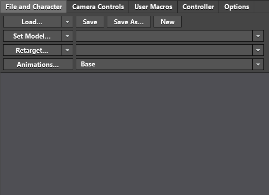

Table of Contents
Welcome to the Granny Animation Studio! This document helps you get up and running by loading and animating a simple character. If you've never worked with the Animation Studio before, this is the best place to begin. If you've worked with the Animation Studio in an earlier incarnation during the beta period, please do breeze through the document, we've added many features and streamlined many others.
See also the ANIMATION STUDIO REFERENCE GUIDE for detailed information about every aspect of the Animation Studio.
Before we begin, let's cover some terminology as used in this tutorial.
The Animation Studio is visually very sparse, by design. Broadly, there are only three or four main interactions you'll be returning to for every character. Of those interactions, you'll mainly be placing nodes, editing their parameters, and dragging connections between them. Anything not relating to this primary task of node specification has been removed so you can deal with it only when necessary.
The basic components of the main interface are:
Preview pane: As you edit the character, you'll preview your changes here. Tabs around the top and bottom of this pane hide configuration and debugging tools. More on that later.
Node editing pane: You wire your character together here. States and blend graph nodes may be created, arranged, and connected in this pane.
Node creation bar: New nodes are created by clicking or dragging from this bar.
Note that there is one hotkey that you should know right away, which is that '?' will pop up a dialog that explains the keyboard shortcuts available to you.
Before adding any animations or behaviors to your character, you're going to need to tell the Studio which skeleton and mesh you'll be working with. (You can always retarget your character to another model, but the model you specify here should be the "natural" model for the animations you'll be working with, that is, the skeleton for which the animations were authored.)
You specify your model file with the "Set Model..." button in the "File and Character" dropdown of the preview pane. (Note that any button with a combobox dropdown indicator on the right allows you to select one of your recent files very quickly.)

Simply select the appropriate GR2 file that contains your skeleton and mesh data. The model should immediately appear in the preview pane. If it doesn't, the first skeleton in the file might not be your character. (It's common for files to contain models for cameras, lights, etc.) Simply select the correct model from the dropdown menu directly to the right of the "Set Model..." button.
Before you specify any animation states, you will need to provide a set of animation sources. We'll come back to the idea of an Animation Set later, when we talk about character variations, but for now, think of it as the list of animation clips that are available to your character. You access the animation set manager either through the "File and Character" menu, or by hitting Control-A at any time.
The elements here are:
As you add animations to the set, they will populate the sources list on the left of of the dialog. The first column shows you which file the clips are stored in, the other column displays the available clips in that file. (There may only be one, but it's considered best practice to combine individual clips into larger files if possible.) Below, I've loaded a single file that provides 12 different walk cycle clips.
On the right side of the dialog are the animation slots. These are named descriptions of an animation clip. In this case "Fast" refers to the run_fast clip in our source. Animation nodes refer to slots, rather than to animations directly so that you can replace them in character variants without altering the node structure.
You may specify slots individually by adding them with the "Add slot" button provided, add all animations by clicking "Add all", or you can drag sources from the source list into the slot list, as shown.
For even more speed, you can drag the source file itself, and create slots for all of it's component animations at once.
Hit "Escape" to dismiss the animation set manager when you are finished with it.
At this point we have a character loaded and we have a set of animations for it. Now we simply need to create a few states to complete the initial process of character design. The most basic animation state is a simple animation, so we'll place two of those. Using the node creation bar, you can either click on the appropriate icon, or drag it into the editing area as shown.
Before we go any further, there are a couple things to note that will come in handy as you create more complicated characters. First, each rectangle here represents a state that the character can be in. We haven't yet specified what those states do, so they are simply given the default name of "Animation", which reflects their type. A green triangle above a node indicates that this is the start state of the character. Every time you load this character in the game, it will begin in this state (you can override this from code, of course). The start state is set by right clicking the state and clicking the '!' box on the upper left. If the icon for the node has a red border around it, then this is the current active state. You change the current state of the character by left-clicking on the node's icon.
Editing a node is as simple as right-clicking anywhere on it, and then changing the parameters in dialog that appears. As an example, let's take the start state of the graph, and set the animation source to our spawn animation. We'll also change this animation to be a "One Shot" animation, so that it won't continuously loop.
You may have noticed that there are more animations than will fit on the screen for this character, which can be hard to scroll through if you use the normal drop-down selection process. To help you quickly find animation clips, selection drop-downs also support a filtered selection. Simply click in the text region of the combobox, and you can enter a filter string to look for the animation you need. Below, we set the other state for this character to one of the idle animations.
Once you have a couple of states for your character, you'll need to tell Granny which transitions are allowed, and parameterize them. The simple character we've created thus far has only a spawn state and an idle state, so it's natural for there to be only one transition: "Spawn to Idle", which should trigger automatically at the end of the Spawn animation.
In order to drag a transition, you click in the highlight around the edge of the start node, that appears when you mouse over it and drag to the target node. (Clicking in the central region selects or moves the node.) We'll specify that spawn to idle transition, and set its type to "On Loop", which tells Granny to trigger the transition when the animation reaches its end point.
The next piece of the puzzle is making a more complicated animation state that requires multiple animation sources and blends them together. Nodes in the state machine may be either simple animations, as we've seen thus far, or they can contain full blend graphs, which don't have states, but inputs and outputs. We'll create a locomotion state which blends between a walk and a jog, controlled by a parameter slider at the top level. There's a lot to accomplish in this quick demo, so definitely watch this animation enough times to catch what's happening here.
There are several brand-new interactions here, so let's cover them quickly. First, note that the parameter node that we created is a different color than the other nodes. This indicates that it is not an animation state, but a parameter source. Second, we jumped into the blend-graph node, which you do by simply double-clicking on it. You back out to the top level of your character either by using the breadcrumb trail along the top of the node window (@ 0:34 in this example), or by using the Back button on your mouse or keyboard.
The visual appearance of blend graph nodes is distinctly different than the state machine nodes to tell you which mode you're currently in. The convention is that node inputs are on the left, node outputs on the right. Parameter flow in from the top-left of the graph, and the outputs are at the top right. We've taken the "Speed" input from the top level, and used it to control the blend node which is mixing the walk and jog animations here.
To create the blending node, we've moved into one of the other tabs of the node creation bar. If you look at those tabs when editing a state machine node you'll find them disabled, since a "Blend" operation doesn't make sense as a state. (States are self contained, and have no pose inputs, only the outputs expected by the state machine.)
The color of the edges and connectors tells you what type of data is expected or produced, and therefore which connections are valid. As you play around with the nodes, the edge types will become obvious, but to get you started:
It's inevitable that something is going to go wrong with your character. An animation will be wrong, or a transition will be too short or too long, some node might not have its parameters set at all, etc. The Studio provides several powerful tools to help debug your character. First, to make it possible to make drastic changes to your character without fear of losing work, the Studio supports an infinite undo stack. This is invoked with Control-Z.
Second, for more fine-grained examinations, you can use the Time Scrubber in the preview window. This allows you to move time back and forth, all the way back to the last undoable operation. So if there is a transition, or a blend that is incorrect, you can examine the current state, parameters, etc., over time to see how they are contributing to the incorrect result. In our example character, the spawn animation is slightly mismatched to the lead-in of the idle state. You can see below that the left front leg of the tiger is in a different position when the current state moves from Spawn to Idle. Once the problem is diagnosed, we can inform the artists, or correct the problem by editing the transitions or blends.
There is a tremendous amount more to cover in the Animation Studio, but we'll pause here. I would recommend that you take time to create the graph shown in the last set of examples, just so you can be sure that the flow of the application is clear. You'll find the Sedna character in the "tutorials/media/gstate" directory of your Granny distribution. Our thanks to Gas Powered Games for generously allowing us to use this model from "Demigod" in our samples!
If you've worked your way through all of the above, there are a couple of extra topics that we should probably cover as well. These pertain to
In addition to animations, you can also sample events, scalar controls, and morph target weights at the character level. More generally, any state machine node controls the outputs of all of its child states, so if you need an event output for your states (for sound triggers or animation syncing, for instance), you'll need to add that output to the state machine itself, rather than adding outputs to the states as you might at a blend graph level.
The most straightforward example of adding a state machine output parameter is just adding an event output to the character root. We'll add one to handle sound events for our character as follows: simply ensure that you are at the root level of the character by clicking "CharacterRoot" in the bread crumb trail at the top of the node editor.
Note that if you are editing a state machine deeper in the hierarchy, and that state machine is contained inside another state machine, you won't be able to add parameters in this fashion. As mentioned, the parent state machine controls the inputs and outputs. If the state machine is contained inside a blend graph, you'll be able to add extra parameters.
You'll notice a section for "Synced Nodes" at the bottom of the transition option pane. Sync pairs allow you to tell the animation system that either whole states (in the case of simple animations) or sub-animations (in the case of more complicated blend structures), should be syncronized either by phase matching or event pairing. Normally, when a transition is triggered, the animation system assumes that it should just start the target state at Time=0, and blend directly to the animation in progress.
For going from unrelated animations like: "walk" -> "wave", this makes sense, but for transitions between "walk" -> "run", you'd of course like the "run" animation to be synchronized in such a way that the feet match up as the transition takes place. The "reference" node is the start node of the transition (walk, in the example above), and the "synced" node is the target node (run, above). The reference node's timeline isn't modified at the start of the transition, obviously, so the terminology is chosen to emphasize that any changes are made to the end-point of the transition.
If the "ref edge/sync edge" selections are left blank, the animation system will "phase match" the animations. That is, it will assume that the animations start in the same position (left foot forward, for instance) and end similarly matched. For walk/run cycles, this is a common convention for animation authoring.
If you have animations that don't have matching phase (perhaps your walk cycle contains one stride and your run cycle extends to two), you'll need to synchronize the transition to a known event in both animations. This allows the animation system to find matching points in the animations that can be used to seamlessly blend between the states. The edge selectors allow you to specify the event output that should be sampled on each target node, and "On Event" allows you to find a matching event that in the output event tracks.
Note that since transitions always happen at the state machine level, in practice you will almost always have to add a published event parameter to ensure there is a shared output at the state level. See the section above (Published Parameters), for details on how to set these up.
One other use case that sync pairs handle is selecting between more complicated blend graph states. For instance, imagine that you are blending from a "walk and wave" state, in which the walk cycle is blended with a greeting animation. Your target is "walk and shoot", in which the walk cycle is blended with a gun firing animation. For the blend to seamlessly transition, the walk node in the first graph must be synchronized with the walk in the second. When the source or target of a transition is a blend graph or another state machine, you'll be able to select internal nodes as the sync source/target, as well as the root level state.
You can also have more than one sync pair for a transition! Imagine that in addition to walking, some "run" is blended into our "walk and wave" example from above to see why you might want this.
{kind=link}
{kind=link}
{kind=link}